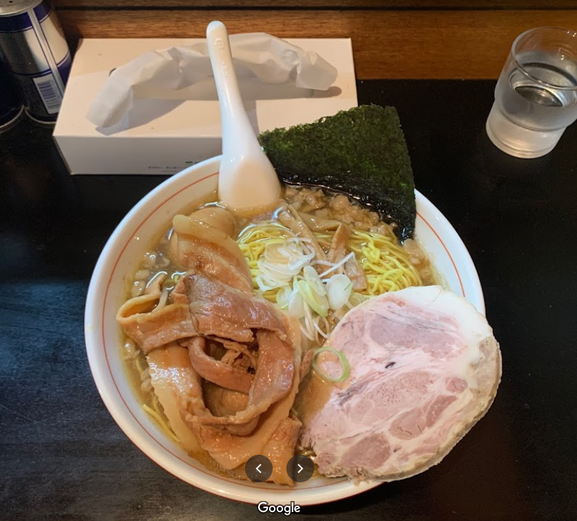
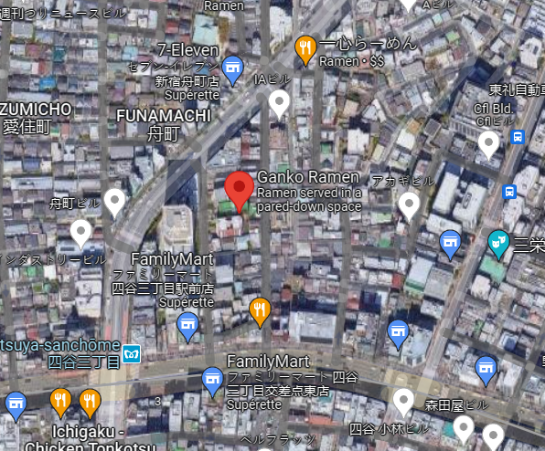
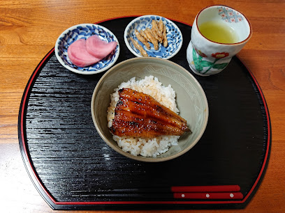
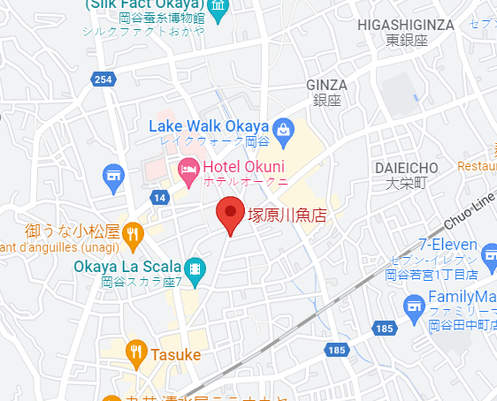
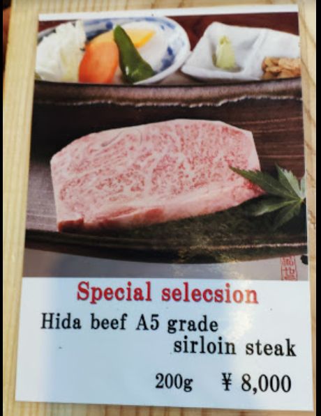
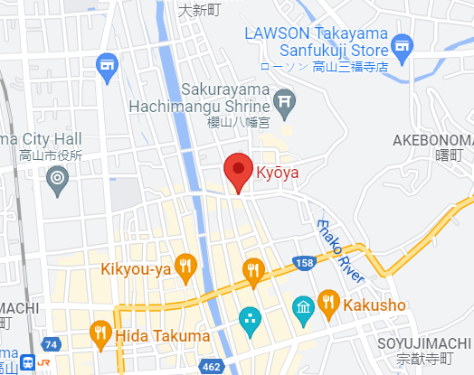

Here you can eat ramen close to the famous stairway
 The ramen is one of the most famous dishes in Japan and Asia. It consistsof Chinese-style noodles served in a meat or fish-based broth, flavoured with soy sauce or miso, topped with pork slices, nori, menma and scallions. Every regions in Japan has its own version of ramen.
Here you can eat Unagi close to the Lac Suwa
 Unagi (ウナギ) is the Japanese word for freshwater eel, especially the Japanese eel, Anguilla japonica (日本鰻). Unagi is a common ingredient in Japanese cooking. It is not to be confused with saltwater eel, which is known as anago in Japanese.
Here you can eat the famous kobe meat close to the shrine
 Kobe beef (神戸ビーフ, Kōbe bīfu) is Wagyu beef from the Tajima strain of Japanese Black cattle, raised in Japan's Hyōgo Prefecture. The meat is a delicacy, valued for its flavor, tenderness, and fatty, well-marbled texture. Kobe beef is generally considered one of the three top brands along with Matsusaka beef and Ōmi beef or Yonezawa beef.